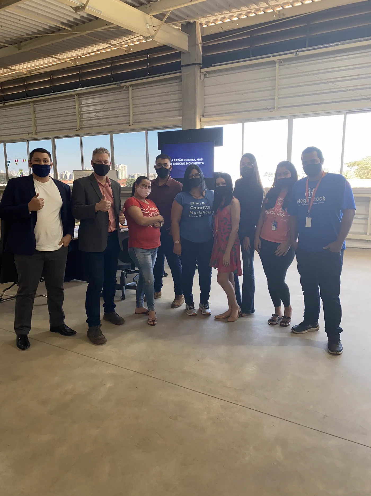

Bastidores · operação real
2021
A origem
A Girumo nasceu dentro de um
atacado de verdade
.
R$ 5 mil
R$ 350 mil
/mês
Um estoque parado virou rotina de vendas com um método de
grupos de WhatsApp
. A Girumo é esse método transformado em sistema — pra qualquer atacadista repetir.
Girumo
Seus grupos rodando. Você vendendo.